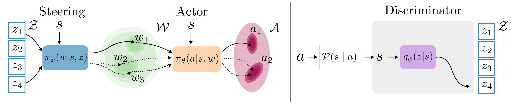

We address the problem of fine-tuning pre-trained generative policies with reinforcement learning (RL) while preserving the multimodality of their action distributions. Existing methods for RL fine-tuning of generative policies (e.g., diffusion policies) improve task performance but often collapse diverse behaviors into a single reward-maximizing mode. To mitigate this issue, we propose an unsupervised mode discovery framework that uncovers latent behavioral modes within generative policies. The discovered modes enable the use of mutual information as an intrinsic reward, regularizing RL fine-tuning to enhance task success while maintaining behavioral diversity. Experiments on robotic manipulation tasks demonstrate that our method consistently outperforms conventional fine-tuning approaches, achieving higher success rates and preserving richer multimodal action distributions.
BMD (Behavioral Mode Discovery) operates on noise-conditioned generative policies such as diffusion and flow-matching models. We represent behavioral modes as a discrete latent variable that conditions the noise input, and introduce a tractable mutual-information proxy to measure multimodality in the induced trajectory distribution. An unsupervised mode-discovery procedure exposes trajectory-level latent modes encoded in the noise without annotations or prior knowledge, yielding a controllable latent representation. During RLFT, the mutual-information estimate serves as an intrinsic reward that regularizes fine-tuning, preventing mode collapse while maintaining task performance.

@inproceedings{longhini2026bmd,
title = {Behavioral Mode Discovery for Fine-tuning Multimodal Generative Policies},
author = {Longhini, Alberta and Emukpere, David and Renders, Jean-Michel and Kim, Seungsu},
booktitle = {Proceedings of the 43rd International Conference on Machine Learning},
series = {PMLR},
volume = {306},
year = {2026},
}